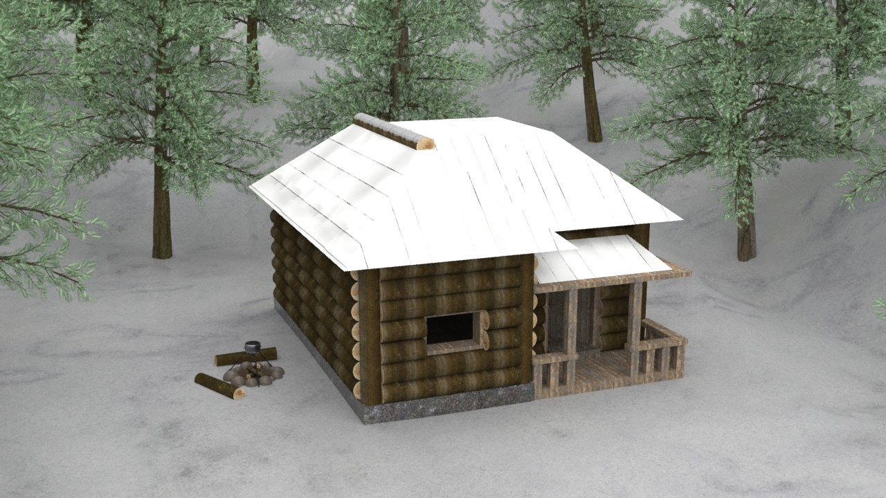
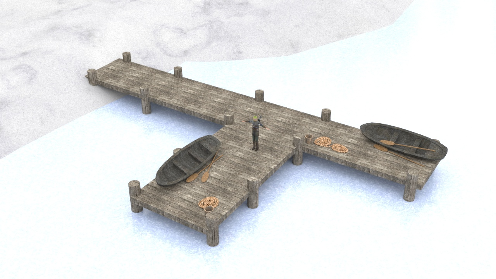
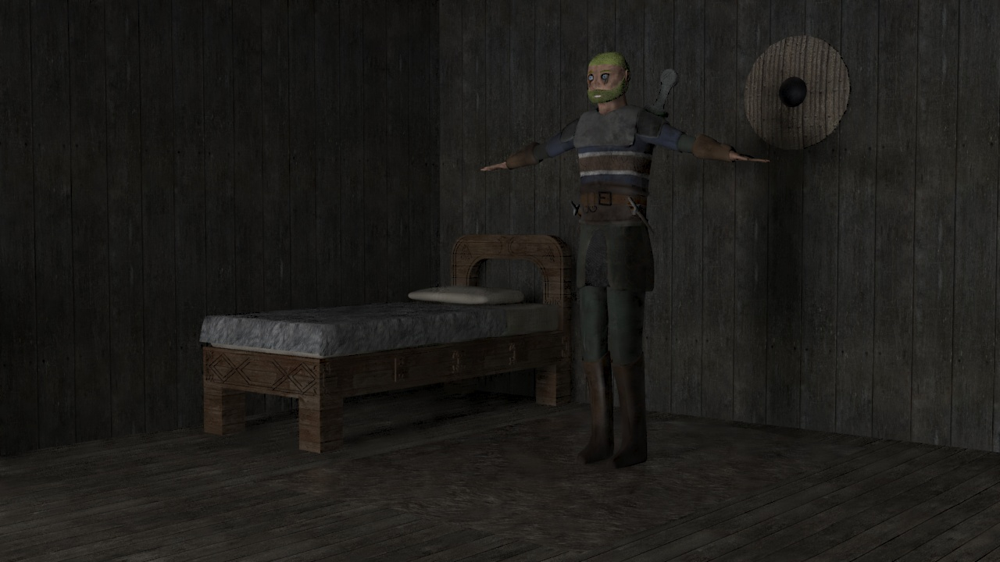
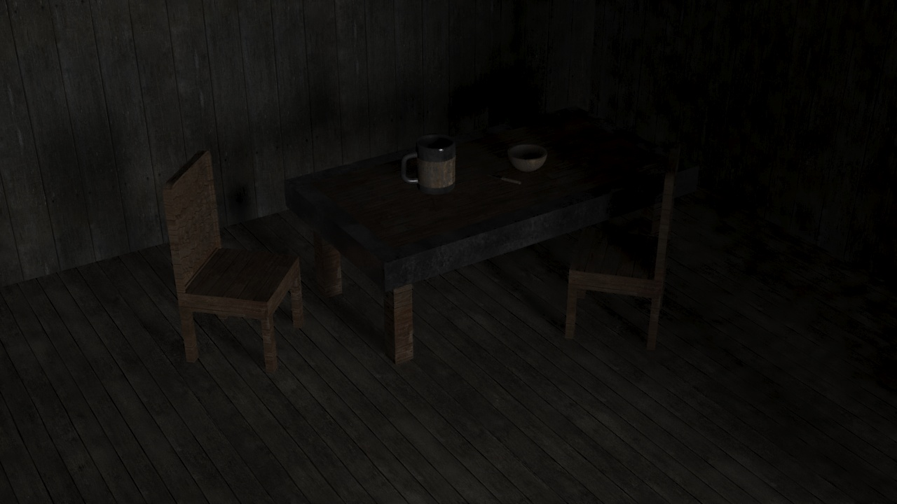
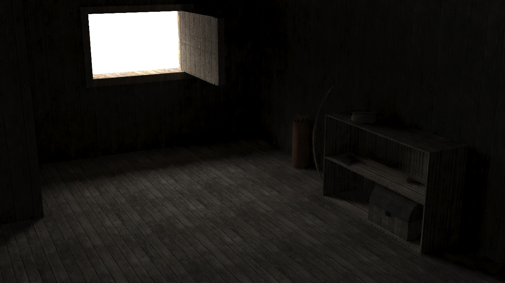
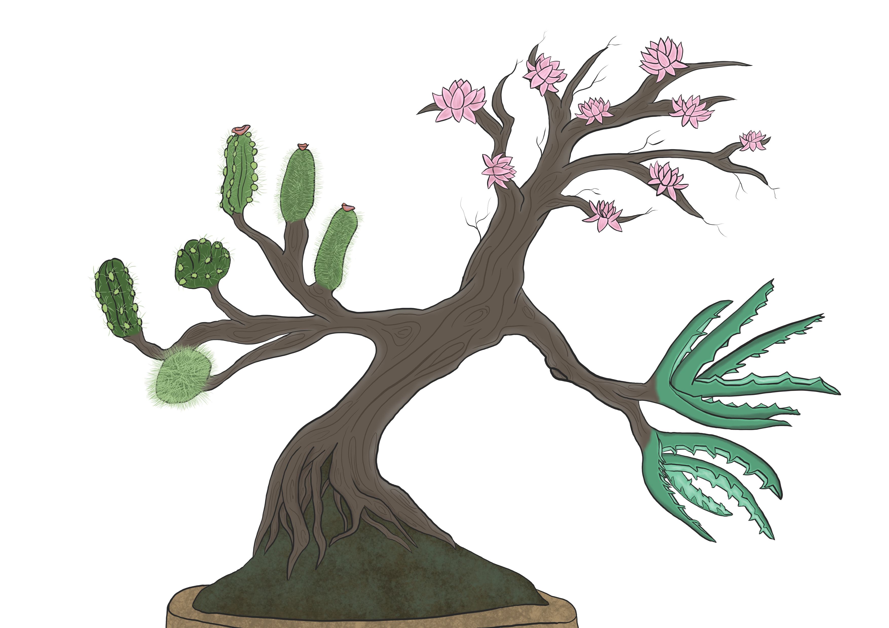
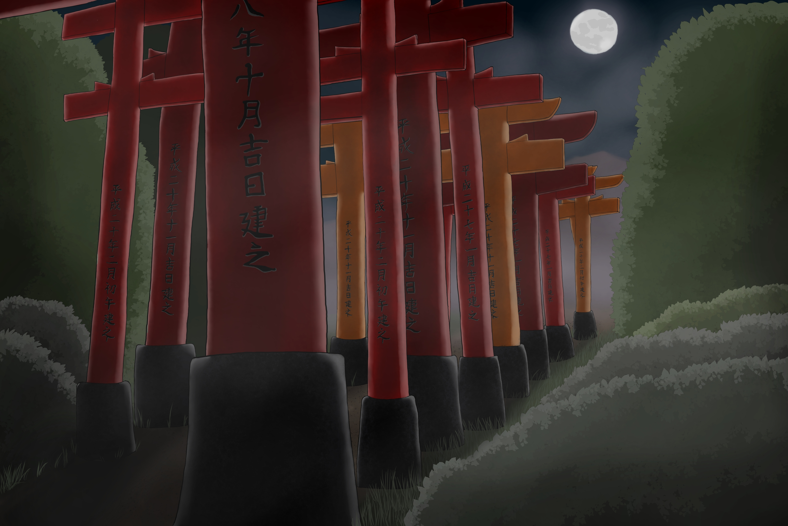
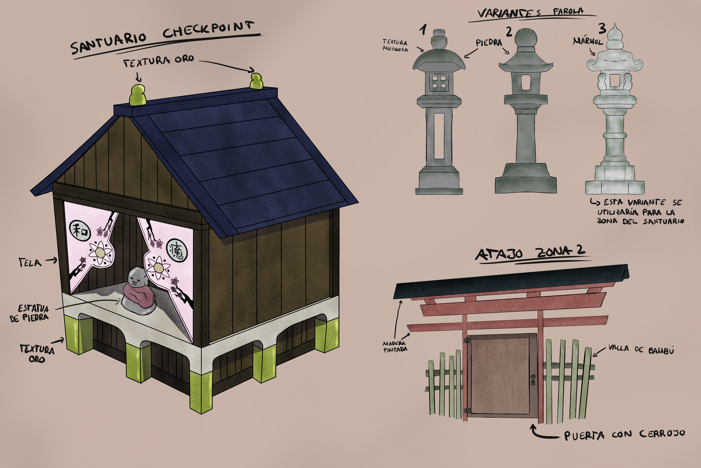
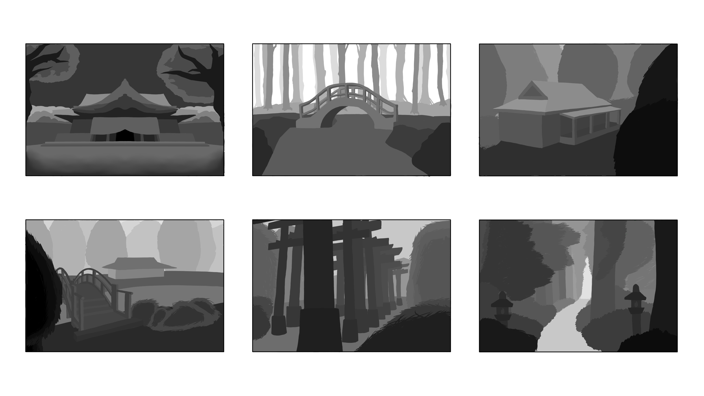
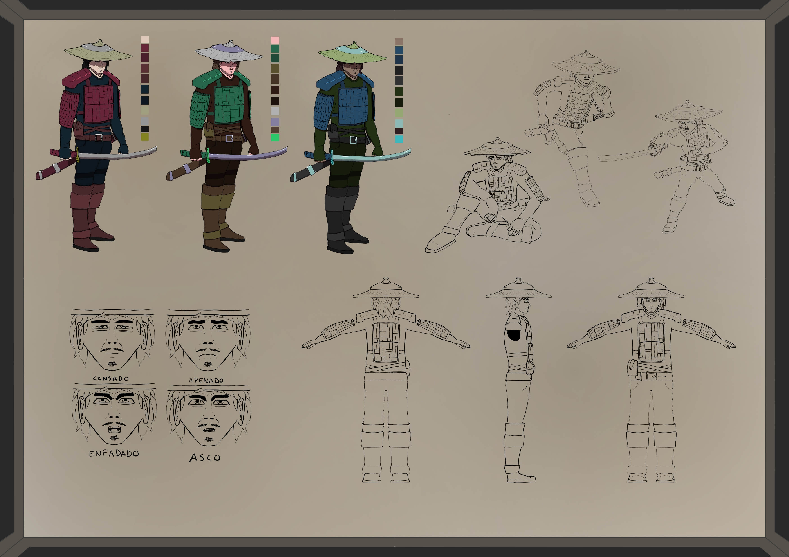

Soy Marcos De Ozaeta, estudiante de último año del Grado en Diseño y Desarrollo de Videojuegos en la Universidad Rey Juan Carlos (URJC) de Madrid. Mi formación académica me ha proporcionado una sólida base en los aspectos técnicos y creativos del desarrollo de videojuegos, como la programación, el diseño de interfaces intuitivas, modelado y animación 3D, entre otros.
En esta página web están presentados los distintos trabajos que he ido realizando durante mis estudios, siendo en su mayoría pequeños videojuegos u otros proyectos relacionados con la industria
Este juego de navegador desarrollado con Phaser 3 nos adentra en el mundo de las peleas de ranas. Podrás elegir entre 4 tipos de ranas y pelear contra un amigo en cooperativo local.
En este proyecto me encargué de los siguientes aspectos:
Arte de las interfaces
Diseño de un personaje: Rana trepadora
Programación del funcionamiento de la interfaz
Implementación de sistema de audio para el juego
Puedes probar el juego en las siguientes plataformas:
Este juego desarrollado con Unity nos pone en la piel de un alma que se ha separado de su cuerpo por culpa de un accidente. Deberás guiarla de vuelta a donde pertenece.
En este proyecto me encargué de los siguientes aspectos:
Arte de las interfaces
Diseño y modelado del nivel del hospital
Implementación de la mayoria de sonidos del juego
Implementación de sistema de guardado de partida
Creación de efecto de parpadeo en las luces del hospital
Puedes probar el juego a través de la plataforma de Itchio:
Este juego desarrollado en Adventure Game Studio está basado en la famosa serie Stranger Things de Netflix.
El jugador controlará a Steve, que irá resolviendo puzles y deberá descubrir los secretos que oculta el laboratorio de Hawkins.
Este juego no fue realizado con el permiso de Netflix, formó parte de una asignatura del primer año de carrera, donde se nos pidió crear un videojuego de un universo ya existente.
En este proyecto me encargué de los siguientes aspectos:
Diseño de niveles
Arte de varios escenarios
Puedes probar el juego a través de la plataforma de Itchio:
- Itchio: haz click aquí
Heat & Hopes
Este juego desarrollado en Unity es un proyecto creado con el propósito de aplicar los conocimientos sobre accesibilidad y usabilidad aprendidos en el GDDV de la URJC El jugador controla a un astronauta que deberá escapar de una nave.
En este proyecto me encargué de los siguientes aspectos:
Implementación de funcionalidades básicas
Implementación de Paralax y otros efectos visuales
Puedes probar el juego a través de la plataforma de Itchio:
Este juego desarrollado en Unity es el ganador de la 1ª Edición de la Gamejam de Game Scholars, asociación de videojuegos de la URJC.
Es un juego del género Roguelike en el que deberás ir avanzando por una mazmorra derrotando a gran variedad de enemigos y jefes, utilizando distintas armas que irás encontrando por las distintas salas.
Nota: No confundir con la versión robada por uno de los desarrolladores y publicada en Steam por cuenta propia.
Diseño del juego
Diseño, arte final, y animación de enemigos
Diseño y arte final de menú principal
Puedes probar el juego a través de la plataforma de Itchio:
Este trabajo consistió en crear un storyboard sobre una escena de una película basada en el libro "La profecía del Abad Negro".
Estos 6 planos de la película representan el comienzo de la escena, donde la protagonista entra a un colegio de noche y va recorriéndolo hasta llegar a su destino.
MODELADO 3D: ASGEIR





Este escenario y personaje han sido modelados, texturizados e iluminados con 3DsMax y Substance Painter.
MODELADO Y ANIMACIÓN 3D: ECHOES OF HONOR
El escenario, criaturas y personaje han sido modelados y animados en 3DsMax, y posteriormente se han incluido en un proyecto de Unity para poder mover al personaje.
CONCEPT ART

Estos concepts representan un animal y una planta fantásticos, siendo ambos combinaciones de animales y plantas existentes.



Este concept art de escenario comenzó con 6 thumbnails de entre los cuales se eligió uno para hacer el beauty. También se añaden varios callouts relacionados con el escenario.

Este concept art de un personaje contiene el beauty del personaje y dos recolores, las poses y expresiones de dicho personaje, y un turn-around para modelarlo.